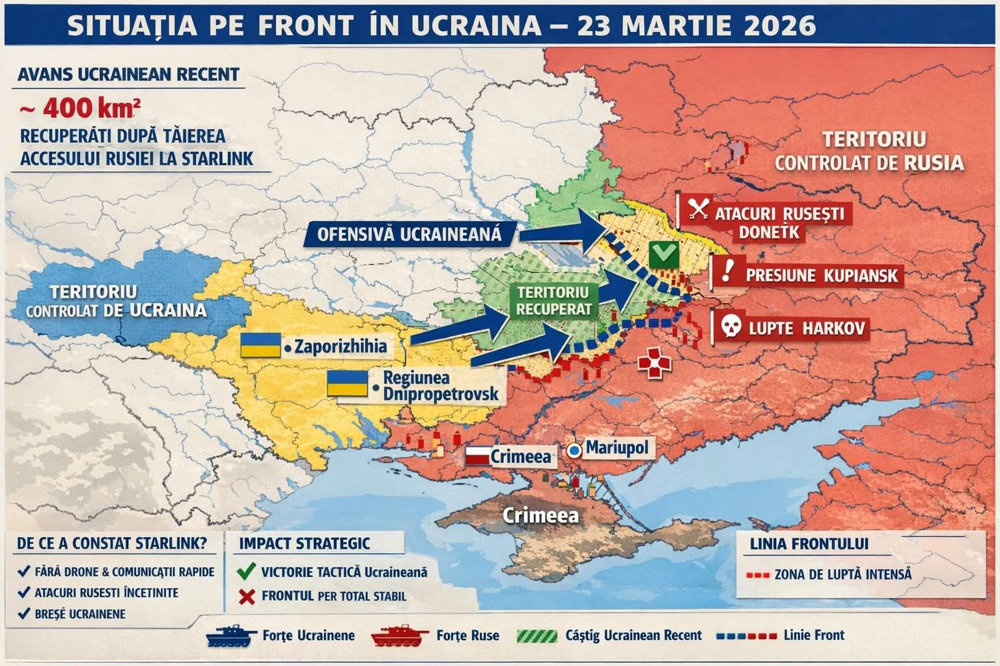

460 km² recuperați de Ucraina din începutul lui 2026, potrivit președintelui Zelenski.
Prima creștere netă de teritoriu de la contraofensiva din vara lui 2023, conform ISW.
Factorul Starlink: tăierea accesului Rusiei la sateliți a redus eficiența dronelor rusești cu 20-40%.
Negocierile: suspendate din cauza crizei din Orientul Mijlociu. Singurul progres — 157 de prizonieri schimbați de fiecare parte.
Analiză bazată pe raportul generalului Alexandru Grumaz și datele Institute for the Study of War (ISW) — martie 2026.
Există un război pe care l-am uitat. Nu pentru că s-a terminat — pentru că altul a explodat mai tare și a captat toate ecranele și toate titlurile. Dar în timp ce lumea urmărea cum Trump inventează negocieri cu Iranul și cum bursa pierde un trilion pe baza unor minciuni, pe frontul din estul Ucrainei s-a întâmplat ceva semnificativ.
Ucraina a recâștigat 400 de kilometri pătrați de teritoriu. Primul câștig net de la contraofensiva din vara lui 2023. Și aproape nimeni nu a vorbit despre asta.
Cum s-a întâmplat
Ofensiva a combinat două lovituri convergente — una spre Huliaipole, lansată la sfârșitul lui 2025, și contraatacul de la Oleksandrivka, declanșat pe 29 ianuarie 2026 — executate de Forțele Aeropurtate cu sprijinul brigăzilor mecanizate. Împreună, cele două lovituri au avansat 10-12 kilometri în adâncimea teritoriului controlat de Rusia, la joncțiunea oblasturilor Donețk, Zaporijia și Dnipropetrovsk.
Zelenski a declarat într-un interviu pentru Corriere Della Sera că din începutul lui 2026, Ucraina a recucerit 460 de kilometri pătrați. „Putin și-a pierdut ofensiva de iarnă. Acum rușii vor încerca ofensive de primăvară, dar cred că le vor pierde din nou", a spus el.

Factorul pe care nimeni nu l-a anticipat: Starlink
Factorul decisiv n-a fost o armă nouă livrată de Occident. N-au fost bani în plus sau trupe suplimentare. A fost o decizie tehnică a lui Elon Musk.
La începutul lui februarie, Musk a impus restricții asupra accesului neautorizat al Rusiei la sateliții Starlink, în urma discuțiilor cu ministrul apărării ucrainean Mykhailo Fedorov. Rusia achizitionase mii de terminale Starlink și le incorporase ca element esențial al infrastructurii de comunicații militare — în special pentru ghidarea dronelor de atac.
Generalul Andriy Biletsky a declarat că întreruperile Starlink au redus eficiența campaniei de drone a Rusiei cu aproximativ 20-40%. Forțele ruse nu vor putea restabili acest nivel de eficiență în următorii trei până la cinci ani.
E o ironie pe care puțini o observă: în timp ce Trump și Musk domină titlurile cu spectacolul iranian, un gest tehnic al lui Musk a schimbat ceva real pe frontul ucrainean. Fără anunțuri, fără conferințe de presă, fără triloane pe bursă. Pur și simplu, dronele rusești nu mai ghidează la fel.
Impactul strategic
Operațiunea a prăbușit planul Rusiei de a crea o zonă-tampon în oblastul Dnipropetrovsk și a forțat Moscova să amâne ofensivele planificate, să acopere breșele din apărare și să redisloce trupe de pe alte fronturi. Exact ce arăta și analiza frontului din weekend — ofensiva de primăvară rusă s-a împotmolit înainte să înceapă cu adevărat.
Obiectivul strategic al Ucrainei, declarat de comandamentul militar, e să infligă 50.000-60.000 de morți și răniți ruși pe lună. La acest nivel de pierderi, Rusia nu ar mai putea reaproviziona armata suficient de rapid pentru a conduce operațiuni de asalt susținute. Cifrele actuale — peste 1.000 de pierderi pe zi — merg în direcția asta, dar ritmul rămâne sub pragul necesar.
Ce nu s-a rezolvat
ISW avertizează că câștigurile tactice nu se vor transforma probabil într-o contraofensivă la scară largă. Forțele ruse vor încerca să-și stabilizeze pozițiile și să reia operațiunile ofensive când terenul se usucă complet. Frontul în est — zona Pokrovsk, centura-fortăreață din Donețk — rămâne sub presiune.
Negocierile de pace sunt suspendate. Criza din Orientul Mijlociu a deviat atenția și resursele diplomatice americane. Singurul progres concret — un schimb de 157 de prizonieri de fiecare parte. Negociatorul american Witkoff a numit-o un rezultat al „angajamentului diplomatic susținut". E o formulare optimistă pentru ceea ce e, în esență, aproape nimic.
Și Ucraina are în față o problemă structurală pe care nicio victorie tactică nu o rezolvă: falimentul de stat amenință dacă împrumutul european de 90 de miliarde de euro nu vine până pe 1 aprilie. Orbán blochează. Slovacia ezită. Iar banii necesari pentru a continua războiul depind de o decizie politică la Bruxelles, nu de o ofensivă la Oleksandrivka.
Ucraina câștigă pe câmpul de luptă și pierde în sala de ședințe. Asta nu e o noutate. Dar în 2026, diferența dintre cele două devine tot mai costisitoare.
De ce contează că nimeni nu a băgat de seamă
Nu e o simplă observație despre atenția media. E o problemă strategică reală. Când un front pe care se desfășoară cel mai mare conflict din Europa de la al Doilea Război Mondial dispare din conștiința publică timp de săptămâni, sprijinul politic pentru continuarea ajutorului scade. Oboseala e reală — și Putin mizează pe ea mai mult decât pe orice armă.
460 de kilometri pătrați recuperați nu înseamnă că Ucraina câștigă războiul. Înseamnă că nu l-a pierdut. Că rezistă. Că are capacitatea să producă surprize tactice chiar și în al cincilea an de conflict. Că armata care ar fi trebuit să cadă în 72 de ore e încă acolo, înaintând.
Merită să știm asta. Chiar dacă Golful Persic arde mai tare.